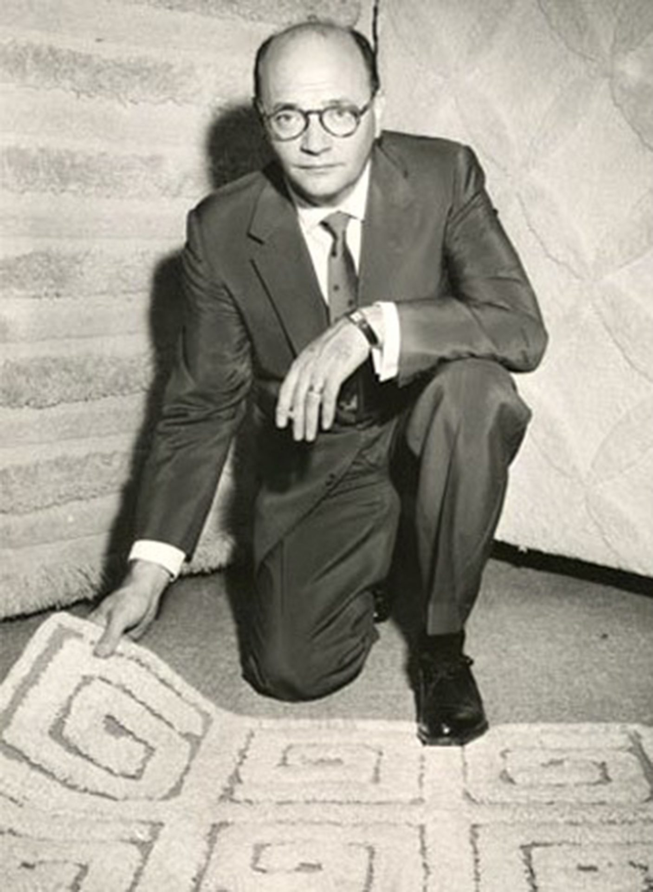
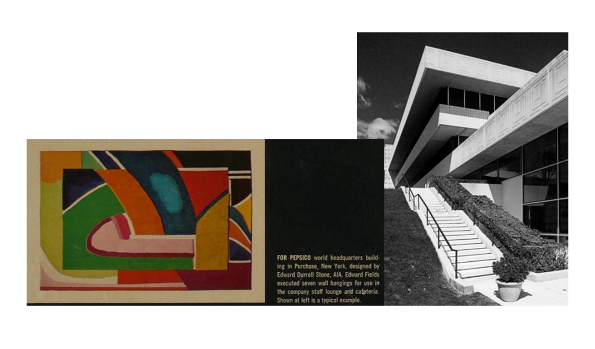
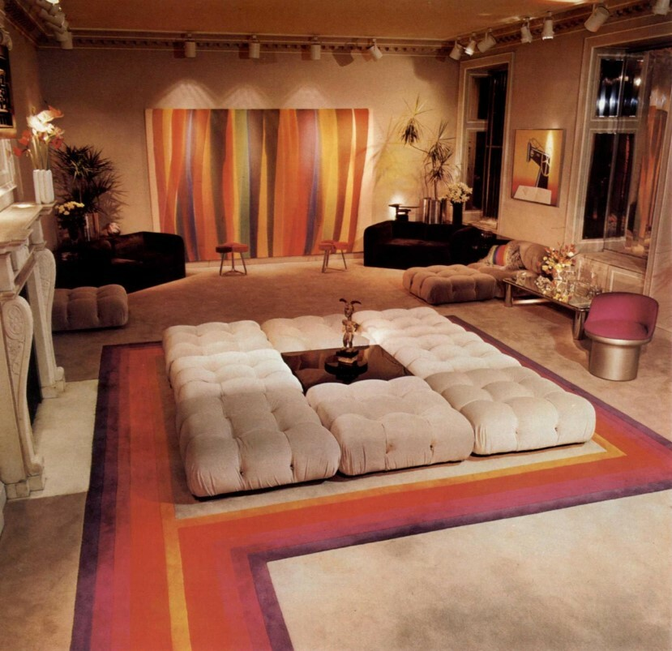
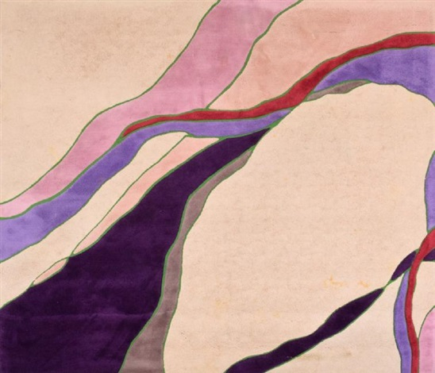

.png)
Design Ideas
Exploring the Timeless Elegance of Edward Fields Rugs
In the realm of luxury interior design, few names evoke a sense of timeless elegance quite like Edward Fields. Renowned for their exquisite craftsmanship and innovative designs, Edward Fields rugs have adorned the floors of prestigious residences, hotels, and corporate spaces for decades, leaving an indelible mark on the world of interior decor.
A Legacy of Craftsmanship
Founded in 1935 by Edward Fields himself, the eponymous brand quickly gained recognition for its commitment to quality craftsmanship and attention to detail. Each Edward Fields rug is a testament to the brand's heritage of excellence, meticulously handcrafted by skilled artisans using the finest materials and techniques.
Innovative Designs Inspired by Art and Architecture
At the heart of Edward Fields' success lies its unwavering dedication to innovation and creativity. Drawing inspiration from art, architecture, and cultural influences around the globe, the brand continuously pushes the boundaries of traditional rug design, creating pieces that are both strikingly original and timelessly elegant.
Customization and Collaboration
One of the hallmarks of Edward Fields' approach is its emphasis on customization and collaboration. Recognizing that every space is unique, the brand offers bespoke design services, allowing clients to create custom rugs tailored to their specific aesthetic preferences and spatial requirements. Collaborations with renowned designers and artists further enrich the brand's portfolio, resulting in truly one-of-a-kind pieces that elevate any interior setting.
A Timeless Investment
More than mere floor coverings, Edward Fields rugs are revered as works of art in their own right. Crafted to withstand the test of time, these exquisite creations become cherished heirlooms, imbued with stories and memories that span generations. Whether adorning the floors of a luxurious penthouse, a stately mansion, or a contemporary office space, an Edward Fields rug adds a touch of sophistication and refinement to any environment.
Conclusion
In a world where trends come and go, Edward Fields stands as a beacon of enduring style and craftsmanship. With a rich legacy spanning nearly a century, the brand continues to captivate discerning clients with its exceptional rugs, each a testament to the brand's unwavering commitment to excellence. From its innovative designs to its bespoke services, Edward Fields remains synonymous with luxury, elegance, and timeless beauty in the realm of interior decor.